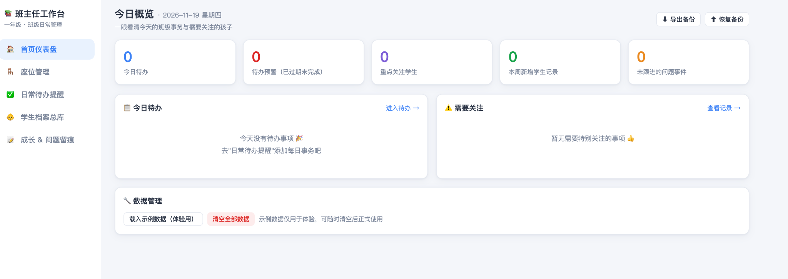

班主任工作台
AI 智能待办助手
基于小学班主任的真实事务管理场景，把零散信息组织成能够查看、处理和追踪的工作流；在此基础上探索 AI 将自然语言转化为结构化待办的交互方式。
直接体验班主任工作台
这是独立的虚构数据演示环境。你可以真实拖拽座位、添加待办、查看学生档案与记录。AI 快速创建任务暂采用本地规则模拟，展示人工确认流程；不声称连接大模型。
演示输入会留在当前浏览器的 localStorage 中。不要填写真实学生姓名、电话、家庭资料。

问题从哪里来？
班主任的日常工作涉及座位调整、待办事项、学生档案、成长记录与问题事件跟进。相关信息分散在不同表格和工作习惯中，容易增加检索和提醒成本。项目尝试用一个轻量工作台整合这些重复操作。
高频待办分散
事务有不同截止日期、重复频率和优先级，传统文本记录不方便集中筛选、标记完成及识别逾期。
学生信息需要关联
学生档案、座位安排、表现记录、事件跟进之间存在关联，需要支持按人快速回溯。
从「记录」到「闭环管理」
首页概览与待办提醒
呈现今日待办、逾期预警、重点关注学生、本周记录和未跟进事件；支持待办状态及周期性事项。
座位管理
按教室布局拖拽调座，支持学生标签筛选、备选池、表格视图与调座日志。
学生档案
支持录入学生基础信息及标签，关联该生的座位、正向表现与问题记录。
成长与问题留痕
分别记录学生表现和问题事件，并保留后续跟进信息，形成可回看的事件时间线。
为什么加入 AI 智能待办？
手工填写任务标题、截止时间和优先级需要反复切换输入框。AI 更适合完成初步语义拆解，而最终日期和业务操作仍交给教师判断。
输入一段班级事务文本
发送到 /api/ai-todo 接口
逐项修改字段，查看模糊提醒
确认后加入原待办清单
真实实现边界：上传的 HTML 已实现前端 AI 请求和任务确认交互，但 AI 解析依赖另行运行的后端接口；未提供后端代码，因此此处不声称已验证在线大模型调用成功。
产品实现与验证重点
已从 HTML 核验的内容
五大管理模块、本地浏览器数据保存、备份导入导出、AI 入口、可编辑任务卡、模糊信息提示与请求超时/失败状态处理。
下一步需要验证
独立 AI 后端可用性、日期与任务解析正确性、人工确认完成率、教师真实处理耗时、数据安全及多设备同步方案。
重要的产品取舍
当前网页选择本地浏览器保存数据，降低了原型部署成本，但跨设备同步与安全管理仍需要进一步设计。对于学生个人信息，应优先保证最小化采集、授权和访问控制；公开演示只使用虚构数据。
AI 输出保持「可编辑、可确认」，是因为日期、优先级及事务内容可能存在歧义。下一阶段可围绕解析准确率、确认修改次数和创建任务耗时建立小型评测集，而不是只统计 API 是否返回。